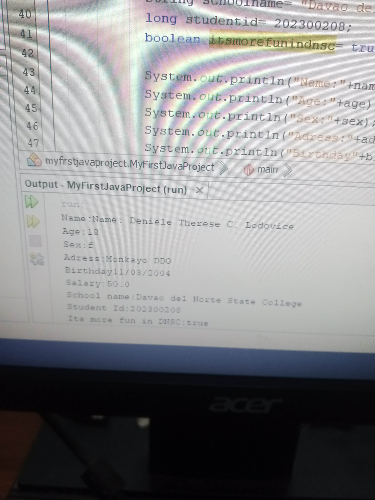
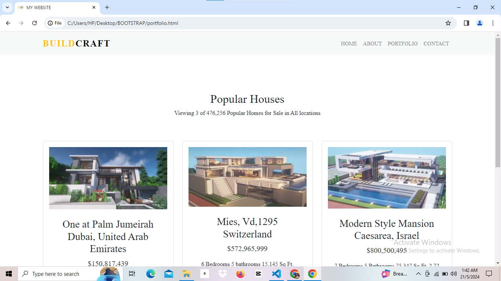
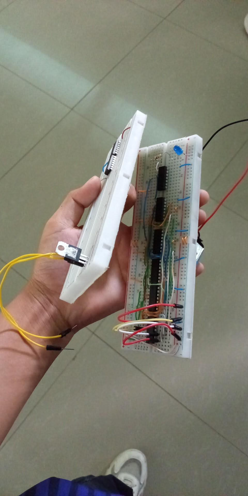
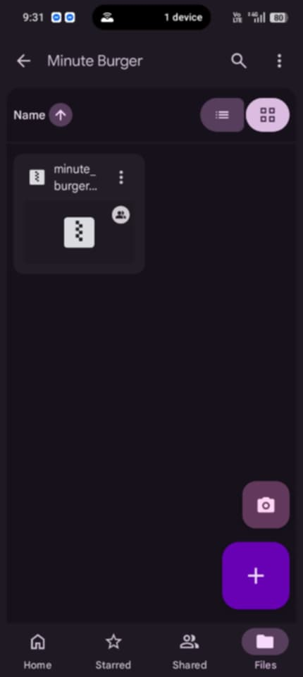
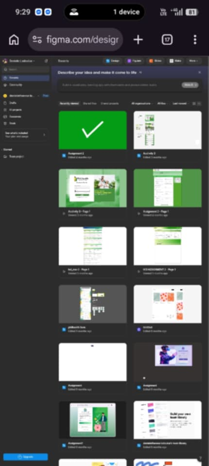
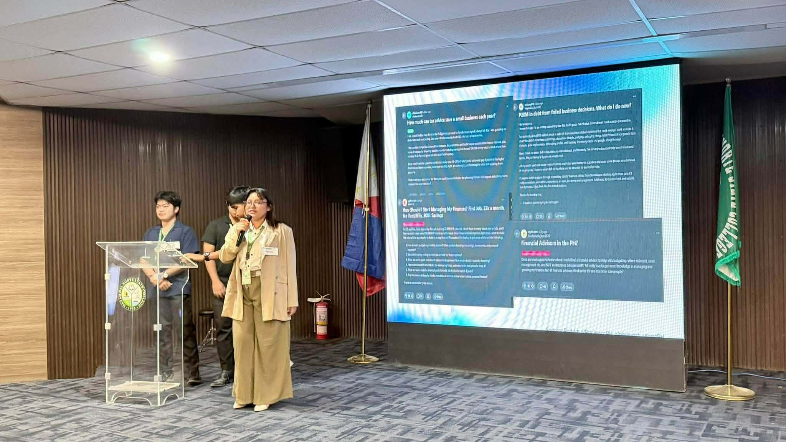
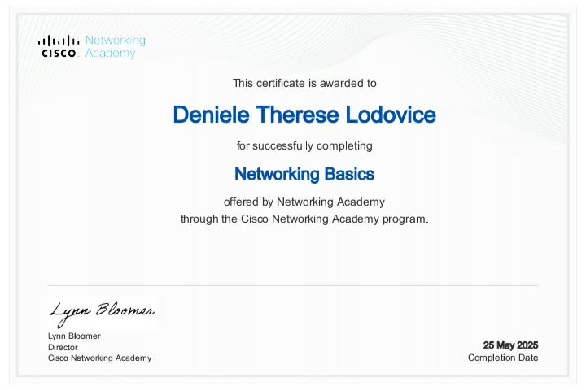
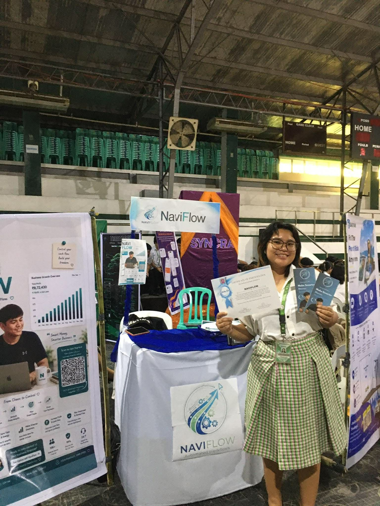

Learning Java
First-year Java exercises from Computer Programming 1 — pattern printing, scaling logic, and my first small programs.
Java
First Year
Programming 1
As an Information Technology student, I believe every challenge is an opportunity to grow. This portfolio showcases my passion for technology, my commitment to lifelong learning, and my journey toward becoming an IT professional who creates solutions that make a difference.
I’m Deniele Therese C. Lodovice, a BS Information Technology student at Davao del Norte State College who turns classroom lessons into real, working projects.
Every year of my degree has added a new layer to how I think — from my first lines of Java to building a Django-powered API, designing interfaces in Figma, and now heading into capstone research.
I care about learning things properly rather than quickly, and about building work that I can actually explain, defend, and improve — not just submit.
“Dream big, learn continuously, and build with purpose.”
A quick overview of my education, coursework, and the tools I've picked up across four years of IT training.
IT student progressing from foundational programming to research, backend development, and interface design. I aim for work that is well-understood, not just well-finished.
Comfortable presenting and defending quantitative research.
From CRUD basics to Django REST APIs and responsive front-ends.
Uses Figma and HCI principles to think through usability.
Davao del Norte State College • 2023 - Present
Highlights from four years of coursework — programming exercises, research, hardware, and design work that trace how my skills have grown.

First-year Java exercises from Computer Programming 1 — pattern printing, scaling logic, and my first small programs.

A working website built for Object-Oriented Programming and Web System and Technologies 2, combining OOP structure with a functioning front-end.

A breadboard logic-circuit build for Data Structures and Algorithms, connecting programming logic to physical computing.

An API-driven project built with Django for Integrative Programming and Technologies 1, applying backend and REST API concepts.

Interface design work for Human and Computer Interaction 1, exploring usability and layout in Figma.

Pitch deck presentations built for Technopreneurship, covering business concept development, the Wadhwani program, and product presentation.
Want the full year-by-year gallery? The original commit-style breakdown is still available in first-year, second-year, third-year, and fourth-year pages.
Certificates earned alongside my coursework in networking and industry training programs.

Foundational networking concepts from Networking 1.

Industry training program completed in third year.
Send your details and I will respond as soon as possible.